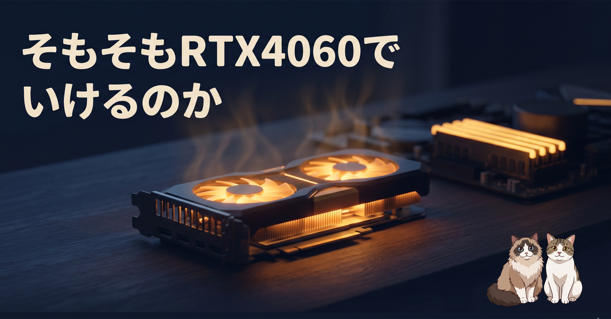

8GB の GPU（RTX4060）で、ローカル LLM だけで Claude Code を動かせないか。配線まではできていたので、あとはモデルを選ぶだけ——のはずだった一日の記録です。結論から書くと、手元で試したモデルは全部だめでした。何がどう「だめ」だったのかを順番に並べていきます。
ホスト Windows 側に Ollama を立てて、ゲスト（開発環境）から API を叩く配線は前回終わっていました。GPU を積んでいるのはホスト側。そこでモデルを動かして、Claude Code はゲストから呼ぶ。構成としては素直です。
今回の縛りはざっくり 4 つ。tool（道具呼び出し）に対応していること、8GB の GPU に収まること、できればコーディングが得意なこと、そして個人的な好みで 中国製は避けたい。最後の 1 つは趣味の領域ですが、これを足した瞬間に候補がごっそり減りました。8GB に収まってコーディングが得意なモデルは、けっこうな割合が中国製です。残ったのは IBM の 8B か、定番の Meta 系くらい。
最初に触った軽量モデルは、起動した瞬間に tool 非対応のエラーで落ちました。Claude Code はファイル読み書きもコマンド実行も全部 tool 経由なので、ここが使えないモデルは初手で詰みます。賢さ以前に仕組みがかみ合わない、というやつです。
次に IBM の 8B モデル。起動はする、エラーも出ない。けれど「今日は何日ですか」と聞くと変な記号が 1 つ出るだけ。「群馬の気温は」と聞くと、tool を呼び出すための命令文（JSON っぽい構造）をそのまま地の文として吐き出してくる。道具を呼んでいるつもりが、ただ独り言を画面に書いているだけでした。
そこで定番の Meta 8B に切り替えました。今度は別方向のおかしさです。「今日は何日ですか」に対して、Claude Code がそのモデルに渡している system プロンプトをそのまま日本語に訳して、頭から音読しはじめたのです。役割の説明、環境の情報、注意事項。質問には一文字も答えていません。
ローカルにこだわるのをやめて、Ollama 経由でクラウド側の大きいモデルを借りてみました。手元の GPU では動かせないサイズを、向こうのデータセンターで動かして API で借りる仕組みです。中国製を避けて、無料枠で使えて、コーディングもこなす。その条件で残ったのが、OpenAI が公開している大きめのモデル（gpt-oss:120b 相当）でした。
同じ質問をぶつけると、別世界です。「今日は何日ですか」にはちゃんと日付で答える。「群馬の気温は」には自分で Web 検索 tool を呼んで調べに行く。「この設定ファイル読める?」には実際にファイルを読みに行って要約する。さっきまでの 8B 勢とは挙動が違いすぎて、同じ Claude Code を見ているとは思えませんでした。
もちろん完璧ではありません。気温を取りに行ったとき、日付を 1 年間違えていました。本家 Claude ほどの正確さはまだ出ない。それでも、tool をちゃんと使えるかどうかの差は、想像していたよりずっと大きい。賢さの差というより、振る舞いの安定性の差です。
それでもローカルをあきらめきれず、クラウドで動いていたモデルの「小さい版」(20B クラス、13GB ほど)を手元に落としました。これなら 8GB GPU でもなんとかなるかも、と。
ダウンロードして起動して、「今日は何日ですか」と打った瞬間から地獄でした。GPU の VRAM 8GB には当然収まらない。あふれた分はメインメモリに逃げますが、メインメモリは仮想マシンに食われていて空きがほとんどない。逃げ場をなくしたデータは、最後に SSD のページファイルへ押し出される。
そこからは PC 全体がディスク待ちで固まりました。リモート接続も切れる。マウスがまた動き出すまで 5 分。Ollama を kill して、ようやく息を吹き返しました。「今日は何日ですか」の一言でここまでやられるのは、さすがに想定外です。
順番に並べるとこうなります。
ローカル（手元の GPU で動かそうとして、全部だめだった組）
クラウド（データセンターの GPU を借りる側。こっちは動いた組）
中国製を避けたいという縛りを外せば、コーディング最強クラスはむしろ中国系に多い、というのが今回の正直な感触です。
今の構成では、クラウドのモデルに任せるのが現実解でした。次の手はいくつかの方向があります。極小モデルを試す方向、避けていた中国モデルを割り切って使う方向、素直にクラウドに寄せる方向、そして「そもそも AI ベンダー純正の Claude や Codex を普通に使うのが、トータルではいちばんコスパがいいんじゃないか」という、今回いちばん身にしみた疑問への方向。
RTX4060 で Claude Code を実用的に動かせる日は来るのか。その問いを抱えたまま、また小さく試していきます。次は、たぶんメインメモリを増やしてからです。